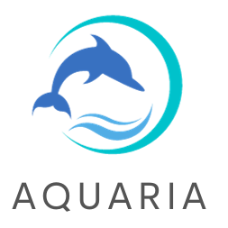
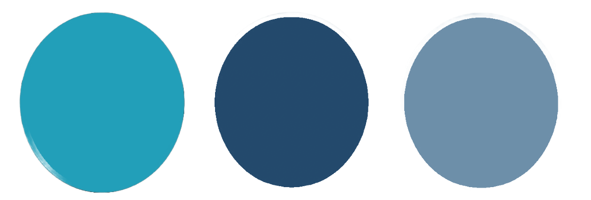
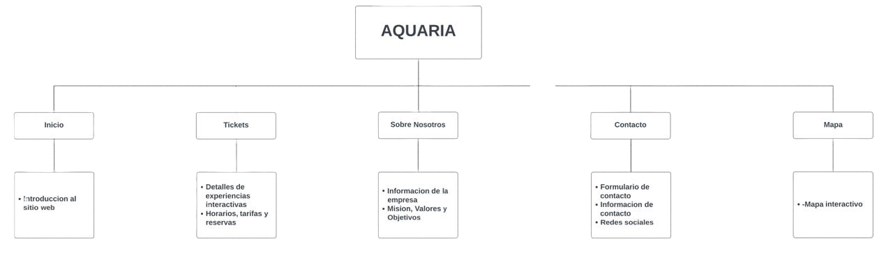

AQUARIA "Explorando y protegiendo juntos"

Logo:
Paleta de colores:
¿De qué se trata la propuesta. ¿Cuál es laactividad principal de la empresa? ¿Cuáles son los objetivos del sitio web?
Nuestra propuesta gira en torno a un acuario con fines de lucro (empresa de servicios) que tiene como enfoque central la educación, la conservación y la promoción de la vida marina y los ecosistemas acuáticos. La actividad principal de esta empresa se centra en ofrecer una experiencia interactiva y educativa para el público, al tiempo que genera ingresos. Algunos de los objetivos del sitio son: Informar sobre la misión y los valores del acuario, promocionar las experiencias y actividades del acuario, facilitar la compra de boletos y reservas, etc
¿Cuál será el concepto general del sitio web? ¿Cómo esperan atraer tráfico al sitio web? ¿Cual es la actividad de la institucion? ¿Que ejes de ODS aborda?
El concepto general del sitio web es reflejar la misión de la empresa, que es la educación, conservación y promoción de la vida marina y los ecosistemas acuáticos. El diseño debe ser atractivo, con elementos visuales que representen la belleza y diversidad del mundo marino. Se debe destacar la importancia de la conservación y la investigación científica en un ambiente que fomente la conciencia y el respeto por el océano. Ideas para atraer el tráfico al sitio web:Publicidad en redes sociales, SEO, marketing de contenidos, etc. La propuesta aborda principalmente los puntos 14 y 13 de los Objetivos de Desarrollo Sostenible (ODS).
¿A quiénes se dirige la propuesta web? ¿Qué características definen este público objetivo? Edad, sexo, aficiones, inquietudes, nacionalidad, poder adquisitivo, etc
El perfil del usuario se dirige a una audiencia interesada en la vida marina, la educación, la conservación y el turismo marino, sin mínimo ni limite de edad, para ambos sexos. Destinado a personas que sean amantes de la naturaleza y la vida marina, interesados en la educación ambiental y la conservación, viajeros y turistas que buscan experiencias de turismo responsable y padres y familias en busca de actividades educativas para sus hijos. La propuesta puede atraer a visitantes locales y turistas de diversas nacionalidades y debe ser accesible para una gama de niveles de ingresos, con opciones de boletos y actividades para diferentes presupuestos. En cuanto a valores, lo ideal seria que esten preocupados por la vida marina y la conservación, interesados en la educación, la ciencia y la investigación marina. y que respeten el medio ambiente y el turismo responsable.
¿Qué imagen general desean transmitir? ¿Qué deben pensar los internautas al llegar al sitio web?
La imagen general que se desea transmitir es la de un sitio web dedicado a la educación, la concienciación y la protección de la vida marina. Debe reflejar una sensación de asombro y admiración por los océanos y sus habitantes, al mismo tiempo que motiva a los visitantes a tomar medidas para la protección de estos ecosistemas. Cuando los internautas lleguen al sitio web, deben percibirlo como un lugar para aprender sobre la vida marina, la conservación y la importancia de proteger los océanos. Deben sentirse motivados a explorar, aprender y, en última instancia, a contribuir a la protección de los ecosistemas acuáticos.
Arbol del sitio:

Inicio: En esta sección, los visitantes encontrarán una introducción al acuario. Puede incluir imágenes de las exhibiciones, animales, información sobre eventos actuales o destacados, y enlaces a otras secciones del sitio. El objetivo principal es atraer la atención de los visitantes y darles una idea general de lo que pueden esperar en el acuario.
Tickets: La sección de "Tickets" es donde los visitantes pueden obtener información sobre precios de entradas, opciones de boletos especiales y promociones. En un acuario sustentable, esta sección podría destacar la importancia de la financiación para la conservación marina y cómo la compra de boletos contribuye a estos esfuerzos.
Sobre Nosotros: En esta sección, los visitantes aprenderán más sobre la misión y valores del acuario sustentable. Puede incluir información sobre la historia del acuario, sus programas de conservación, las especies que alberga y sus prácticas sostenibles. También es un lugar para destacar el compromiso del acuario con la educación y la concienciación sobre la vida marina y la importancia de la sustentabilidad.
Contacto: La sección de "Contacto" proporciona a los visitantes la información necesaria para ponerse en contacto con el acuario, ya sea por teléfono, correo electrónico o a través de un formulario en línea.
Mapa: La sección de "Mapa" ofrece a los visitantes un plano o mapa interactivo que muestra donde queda el acuario, sus horarios de apertura y detalles extra.